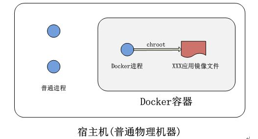
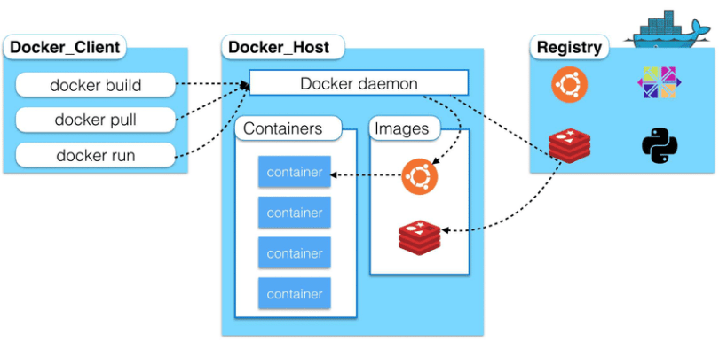
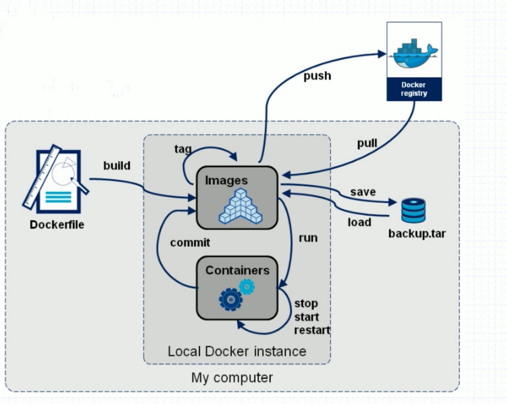

Docker简介
- Docker是基于 Linux 内核的 cgroup，namespace，以及 AUFS 类的 Union FS 等技术，对进程进行封装隔离，属于操作系统层面的虚拟化技术
- 相比传统的虚拟机，Docker没有自己的内核，无需硬件模拟，相对而言更加轻便，无需操作系统


Docker的优势
- 更高效的利用系统资源，容器不需要进行硬件虚拟以及运行完整操作系统等额外开销
- 更快速的启动时间，传统的虚拟机技术启动应用服务往往需要数分钟， Docker容器应用可以做到秒级、甚至毫秒级的启动时间
- 更轻松的迁移，由于 Docker 确保了执行环境的一致性，使得应用的迁移更加容易
- 更轻松的维护和扩展，Docker 使用的分层存储以及镜像的技术，使得应用重复部分的复用更为容易，也使得应用的维护更新更加简单，基于基础镜像进一步扩展镜像也变得非常简单。
对比传统虚拟机总结
| 特性 | 容器 | 虚拟机 |
|---|---|---|
| 启动 | 秒级 | 分钟级别 |
| 硬盘使用 | 一般以MB为单位 | 一般以GB为单位 |
| 性能 | 接近原生 | 弱于 |
| 系统支持量 | 单机支持上千个容器 | 一般几十个 |
容器&镜像&仓库&Docker daemon &Docker client
- 容器的实质是进程，相对于系统的普通进程，容器应用的文件系统，网络配置，进程空间都是运行在一个隔离的环境，如下图所示

- 镜像相对于容器就像二进制程序和二进制程序运行的进程类似，镜像是静态的定义，容器是运行的实体
- 仓库就是存储一个软件不同版本的镜像，用标签来标签来标识，例如ubuntu这个镜像，有两个版本，分别就表示为ubuntu:14.04，ubuntu:16.04 ，：后面就是镜像的标签
- Docker daemon就是用来管理容器运行和镜像的平台，用来运行，停止，删除容器。更新升级容器的镜像
- Docker client就是用来操作Docker平台的入口，通过Docker client的pull start stop等指令来操作管理Docker平台的容器和镜像
- 关系如下图 
DockerFile
- Dockerfile 是一个文本文件，其内包含了一条条的指令(Instruction)，每一条指令构建一层，因此每一条指令的内容，就是描述该层应当如何构建容器的镜像
- DockerFile和容器与镜像的关系如下图 
制作镜像环境
- 创建一个文件夹专门用于制作镜像
mkdir docker_build
- 创建一个名为Dockerile的文件
touch Dcokerfile
FROM
- 制作镜像基础镜像是必须指定的。而FROM 就是指定基础镜像，因此一个Dockerfile 中 FROM 是必备的指令，并且必须是第一条指令。
- FROM是构建应用程序的docker镜像的基础镜像，表示应用程序在此基础上构建
FROM centos:latest/debain/ubuntu/
RUN
- RUN 指令是用来执行命令行命令的,用于程序构建项目所需要的基础环境，应用程序依赖的第三方库和一些插件和运行环境
- Dockerfile 中每一指令都会建立一层，尽量缩减层数，减少构建部署时间，Union FS 是有最大层数限制的, docker的AUFS现在是不得超过127层。
- 需要合并指令,简化指令
FROM debian:jessie
RUN buildDeps='gcc libc6-dev make' \
&& apt-get update \
&& apt-get install -y $buildDeps \
&& wget -O redis.tar.gz "http://download.redis.io/releases/redis-3.2.5.tar.gz" \
&& mkdir -p /usr/src/redis \
&& tar -xzf redis.tar.gz -C /usr/src/redis --strip-components=1 \
&& make -C /usr/src/redis \
&& make -C /usr/src/redis install \
&& rm -rf /var/lib/apt/lists/* \
&& rm redis.tar.gz \
&& rm -r /usr/src/redis \
&& apt-get purge -y --auto-remove $buildDeps
COPY
- 将一些应用程序所需要的第三方程序和插件，拷贝进制作的docker镜像的容器中
COPY file /docker_image_dir
- 使用 COPY 指令，源文件的各种元数据都会保留。比如读、写、执行权限、文件变更时间等, 可以通过--chown来改变用户和属组属性
COPY --chown=55:mygroup files* /mydir/
COPY --chown=bin files* /mydir/
COPY --chown=1 files* /mydir/
COPY --chown=10:11 files* /mydir/
ADD
- ADD 指令和 COPY 的格式和性质基本一致。但是在 COPY 基础上增加了一些功能。在 Docker 官方的 Dockerfile 最佳实践文档 中要求，尽可能的使用 COPY，因为 COPY 的语义很明确，就是复制文件而已，而 ADD 则包含了更复杂的功能，其行为也不一定很清晰。最适合使用 ADD 的场合，就是所提及的需要自动解压缩的场合。
ADD ubuntu-xenial-core-cloudimg-amd64-root.tar.gz /
WORKDIR
- 使用 WORKDIR 指令可以来指定工作目录（或者称为当前目录），以后各层的当前目录就被改为指定的目录，如该目录不存在，WORKDIR 会帮你建立目录。一般就是应用程序二进制的运行目录/bin/
EXPOSE
- EXPOSE 指令是声明运行时容器提供服务端口，这只是一个声明，在运行时并不会因为这个,声明应用就会开启这个端口的服务。这个端口是给调用方进行API调用通信使用
EXPOSE Port
VOLUME
- 有些数据需要持久化数据的需要挂载卷，然后在容器外部将外部卷映射对应到容器内部的目录，这个目录给容器中运行的程序需要存储的数据提供存储
docker run -it -v outside_dir:docker_dir:read_write_privilege
ENTRYPOINT&CMD
- ENTRYPOINT指令用于服务启动前的一些准备工作，比如配置一些变量，初始化运行环境
- CMD用于启动容器中二进制程序的命令
- ENTRYPOINT先执行，然后再执行CMD命令
- 例子中就会先执行docker-entrypoint.sh，然后执行服务启动命令
<ENTRYPOINT> "<CMD>"
ENTRYPOINT ["docker-entrypoint.sh"]
CMD [ "sh" "-c", "start.sh start" ]
ENV
- 设置容器内部的全局环境变量
- 可以进行后期定制升级操作
- 下面例子可以看出，后期如果需要升级和变动，只需要修改NODE_VERSION就可以了
ENV NODE_VERSION 7.2.0
RUN curl -SLO "https://nodejs.org/dist/v$NODE_VERSION/node-v$NODE_VERSION-linux-x64.tar.xz" \
&& curl -SLO "https://nodejs.org/dist/v$NODE_VERSION/
build image
- 执行命令，用于构建应用程序的docker镜像
docker build -t image_name:version .
build image from container
- 以当前容器id为参数制作镜像
docker commit container_id docker_image_name:version
push image
- 将制作的镜像推送到指定的镜像仓库
docker tag image_id docker_image_name:version
docker push docker_image_name:version